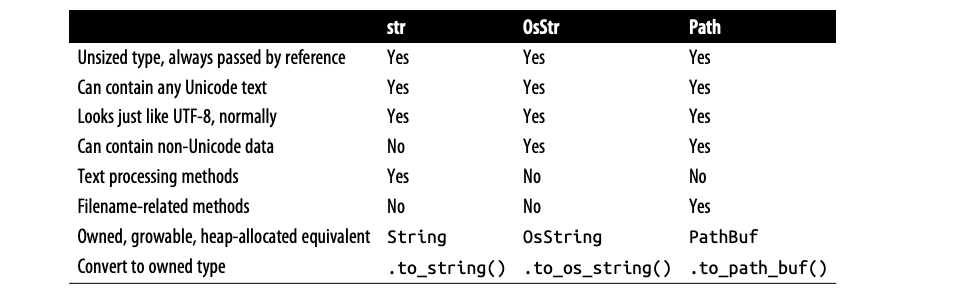

【Rust】输入输出
Rust 用于输入和输出的标准库功能围绕三个Trait组织：Read、BufRead 和 Write：
-
实现
Read的值具有面向字节的输入的方法，他们被称为Reader； -
实现
BufRead的值是缓冲读取器，它们支持Read的所有方法，以及读取文本行等的方法； -
实现
Write的值支持面向字节和UTF-8文本输出，它们被称为Writer；
在本节中，将解释如何使用这些Trait及其方法，涵盖图中所示的读取器和写入器类型，并展示与文件、终端和网络交互的其他方式。
Readers、Writers
Readers 是内容输入源，可以从哪里读取字节。例如：
-
使用
std::fs::File::open打开的文件； -
可以从
std::net::TcpStream代表的网络连接中读取数据； -
可以从
std::io::stdin()标准输入读取数据； -
std::io::Cursor<&[u8]>和std::io::Cursor<Vec<u8>>值，它们是从已经在内存中的字节数组或vector中“读取”的读取器；
Writers 是那些你可以把值写入的地方，例如：
-
使用
std::fs::File::create创建的文件； -
基于网络连接
std::net::TcpStream传输数据； -
std::io::stdout()和std::io:stderr()可以用于向标准输出和标准错误写入内容； -
std::io::Cursor<Vec<u8>>类似，但允许读取和写入数据，并在vector中寻找不同的位置； -
std::io::Cursor<&mut [u8]>和上面的类似，但是不能增长内部的buffer，因为它仅仅是已存在的字节数组的引用；
由于Reader和Writer有标准的 Trait（std::io::Read 和 std::io::Write），编写适用于各种输入或输出通道的通用代码是很常见的。 例如，这是一个将所有字节从任何读取器复制到任何写入器的函数：
1 | use std::io::{self, ErrorKind, Read, Write}; |
这是 Rust 标准库 std::io::copy() 的实现，因为它是泛型的，所以可以把数据从 File 复制到 TcpStream，或者从 Stdin 到内存中的 Vec<u8>。
Readers
std::io::Read 有几个读取数据逇方法，它们所有都以 &mut self 作为参数。
-
reader.read(&mut buffer)：从数据源读取一些字节并将它们存储在给定的缓冲区中，缓冲区参数的类型是&mut [u8]，这最多读取buffer.len()个字节。返回类型是io::Result<u64>，它是Result<u64,io::Error>的类型别名。成功时，u64值是读取的字节数，它可能等于或小于buffer.len()，Ok(0)表示没有数据要读取。出错时，
.read()返回Err(err)，其中err是io::Error值。io::Error是可打印的。对于程序，它有一个.kind()方法，该方法返回io::ErrorKind类型的错误代码。这个枚举的成员具有PermissionDenied和ConnectionReset之类的名称，大多数不可忽视的明显错误，但应特别处理一种错误，io::ErrorKind::Interrupted对应Unix错误代码EINTR，表示读取恰好被信号中断，除非程序被设计成巧妙地处理信号，否则它应该只是重新读去。.read()方法非常低级，甚至继承了底层操作系统的怪癖。如果你正在为一种新型数据源实现Read，这会给你很大的余地，如果你试图读取一些数据，那会很痛苦。因此，Rust提供了几种更高级的便利方法。它们都具有.read()方面的默认实现，它们都处理ErrorKind::Interrupted，所以你不必这样做。 -
reader.read_to_end(&mut byte_vec)：从Reader中读取剩余的输入追加到byte_vec，它是Vec<u8>类型，返回io::Result<usize>表示读取的数量； -
reader.read_to_string(&mut string)：同上，但是追加数据到String中，如果遇到无效的UTF-8，将返回ErrorKind::InvalidData。在某些编程语言中，字节输入和字符输入由不同的类型处理。如今，UTF-8如此占主导地位，以至于Rust承认这一事实标准并在任何地方都支持UTF-8； -
reader.read_exact(&mut buf)：读取足够的数据以填充给定的缓冲区，参数类型是&[u8]。如果读取器在读取buf.len()字节之前用完数据，则返回ErrorKind::UnexpectedEof错误； -
reader.bytes()：返回输入流的按字节迭代器，类型是std::io::Bytes。 -
reader.chain(reader2)：将多个Reader连接起来，先从当前reader读取数据，如果遇到EOF，则从reader2读取； -
reader.take(n)：创建一个适配器，该适配器最多可以从中读取限制字节。此函数返回一个新的Read实例，它最多读取n个字节，之后它将始终返回EOF (Ok(0))。任何读取错误都不会计入读取的字节数，未来对read()的调用可能会成功。
Buffered Readers
为了提高效率，可以缓冲读取器和写入器，这仅仅意味着它们有一块内存（缓冲区），用于在内存中保存一些输入或输出数据。这减少了系统调用，如下图所示，应用程序应该从 BufReader 读取数据，在此示例中通过调用其 .read_line() 方法。BufReader 反过来从操作系统获取更大块的输入。
缓冲 Reader 实现了 std::io::Read 和 std::io::BufRead ，后者增加了下面的方法：
-
reader.read_line(&mut line)：读取一行文本追加到line中，它是String类型，换行符\n或者\r\n都会追加到line中，返回值是std::io::Result<usize>，表示读取的字节数量，如果reader已经读完，则应该保持不变直接返回Ok(0)； -
reader.lines()：在输入的行上返回一个迭代器，项目类型是io::Result<String>，换行符不包含在字符串中。如果输入具有Windows样式的行尾"\r\n"，则两个字符都将被删除。这种方法几乎总是想要的文本输入，接下来的两节展示了它的一些使用示例； -
reader.read_until(stop_byte, &mut byte_vec)、reader.split(stop_byte)：它们就像.read_line()和.lines()，但面向字节，生成Vec<u8>而不是字符串，由调用者选择分隔符stop_byte；
BufRead 还提供了一对低级方法，.fill_buf() 和 .consume(n)，用于直接访问读取器的内部缓冲区。
Reading Lines
这里有一个实现类似 grep 的函数，它搜索许多文本行，然后将它传入下一个命令：
1 | use std::io; |
由于要调用 .lines()，需要一个实现 BufRead 的输入源。在这种情况下，我们调用 io::stdin() 来获取通过管道传输给我们的数据。但是，Rust 标准库使用互斥锁保护标准输入。我们调用 .lock() 来锁定 stdin 以供当前线程独占使用，它返回一个实现 BufRead 的 StdinLock 值，在循环结束时，StdinLock 被丢弃，释放互斥锁。
该函数的其余部分很简单，它调用 .lines() 并遍历生成的迭代器。因为这个迭代器产生 Result 值，所以我们使用 ? 操作员检查错误。假设我们想让我们的 grep 程序更进一步，并添加对在磁盘上搜索文件的支持。我们可以使这个函数通用：
1 | fn grep<R>(target: &str, reader: R) -> io::Result<()> |
现在我们可以向它传递一个 StdinLock 或一个缓冲文件：
1 | let stdin = io::stdin(); |
请注意，文件不会自动缓冲，File 实现 Read 但没有实现 BufRead。但是，为文件或任何其他非缓冲读取器创建缓冲读取器很容易，就像 BufReader::new(reader)。（要设置缓冲区的大小，请使用 BufReader::with_capacity(size, reader)）
在大多数语言中，默认情况下文件带有缓冲功能，如果你想要无缓冲的输入或输出，你必须弄清楚如何关闭缓冲。在 Rust 中，File 和 BufReader 是两个独立的库功能，因为有时希望文件没有缓冲，有时希望缓冲来自网络的输入。
完整的程序如下所示：
1 |
|
Writers
正如我们所见，输入主要是使用方法完成的，输出有点不同，输出主要用作参数。
-
println!()和print!()：都是将信息输出到标准输出，不同的是前者会增加一个换行符，遇到错误都panic； -
eprintln!()和eprint!()：将信息输出到标准错误，不同的是前者会增加一个换行符，遇到错误都panic； -
writeln!()和write!()：将信息输出到第一个参数指定的目的地，不同的是前者会增加一个换行符，返回一个Result；
std::io::Write 有以下方法：
-
writer.write(&buf)：将切片buf中的一些字节写入底层流。它返回一个io::Result<usize>。成功时，返回写入的字节数，可能小于buf.len()，与Reader::read()一样，这是一种低级方法，应避免直接使用； -
writer.write_all(&buf)：写入buf所有字节，返回io::Result<()>； -
writer.flush()：将缓存的所有数据都写入底层的流中，返回Result<()>；
writer 会被自动关闭，当它们被丢弃的时候，可以使用 BufWriter::new(writer) 基于任何 writer 生成一个带缓冲的 Writer。
1 | let file = File::create("tmp.txt")?; |
如果要设置 buffer 大小，可以使用 BufWriter::with_capacity(size, writer)。当 BufWriter 被丢弃的时候，所有缓存的数据被写入底层的 Writer，如果这期间发生错误，将被忽略。为了让程序处理所有可能的错误，在丢弃 BufWriter 之前，使用 .flush() 将缓存的数据写到底层的流中。
Files
下面列出常用的文件打开方法：
-
std::fs::File::open(filename)：打开已经存在的文件用于读取，返回std::io::Result，如果文件返回错误； -
std::fs::File::create(filename)：创建一个文件用于写，如果文件已经存在，将会被清空；
如果这些不满足，还可以使用 std::fs::OpenOptions 在打开文件时，设置更多的参数：
1 | use std::fs::OpenOptions; |
OpenOptions 有几个方法用于打开文件时设置属性：
-
.append()：设置追加模式； -
.create()：如果文件存在则打开，不存在则创建； -
.create_new()：创建新文件，如果文件已经存在则会失败，这个option是原子的，另外如果该选项设置，.create()和.truncate()就被忽略； -
.read()：设置读权限； -
.truncate()：如果文件已经存在，清空文件； -
.write()：设置写权限；
Seeking
File 也实现了 std::io::Seek，这意味着可以在 File 内跳转，而不是从头到尾一次读取或写入，Seek 是这样定义的：
1 | pub trait Seek { |
在文件内跳来跳去效率很低，无论是机械硬盘还是固态硬盘，一次寻址所需的时间都与读取几兆字节的数据一样长。
其他读写类型
这里有其他的读写类型：
-
io::stdin()：返回标准输入用于数据读取，返回值的类型是std::io::Stdin，因为这个被所有线程共享，所以每次使用都需要使用互斥锁。Stdin的.lock方法返回io::StdinLock，它是一个带缓冲的Reader持有互斥锁直到丢弃。出于技术原因，
io::stdin().lock()是无效的，锁持有Stdin的引用，这意味着Stdin必须被存在一个变量中以至于它的生命周期足够长：1
2let stdin = io::stdin();
let lines = stdin.lock().lines(); // ok -
io::stdout()、io::stderr()：返回标准输出和标准错误用于数据写入，它们也有.lock方法； -
Vec<u8>：实现了std::io::Write，写入数据到u8序列； -
std::io::Cursor::new(buf)：创建一个Cursor，一个从buf读取的缓冲读取器，这就是创建读取字符串的阅读器的方式。参数buf可以是任何实现AsRef<[u8]>的类型，因此也可以传递&[u8]、&str或Vec<u8>。Cursor在内部是很简单的，它们只有两个字段：buf本身和一个整数，即buf中下一次读取将开始的偏移量，该位置最初为0。Cursor实现Read、BufRead和Seek，如果buf的类型是&mut [u8]或Vec<u8>，那么Cursor也会实现Write。写入Curosr会覆盖buf中从当前位置开始的字节。如果试图写超出&mut [u8]的末尾，会得到一个部分写或一个io::Error。不过，使用Curosr写入Vec<u8>的末尾是可以的，它会增大vector。因此，Cursor<&mut [u8]>和Cursor<Vec<u8>>实现了所有4个std::io::prelude中的Trait。 -
std::net::TcpStream：代表底层的 TCP 连接，可读可写；TcpStream::connect(("hostname", PORT))尝试去连接到一个server并且返回io::Result<TcpStream>。 -
std::process::Command：支持生成子进程并将数据传输到其标准输入，如下所示：1
2
3
4
5
6
7
8
9
10
11
12
13
14
15
16
17
18
19
20
21use std::error::Error;
use std::io::Write;
use std::process::{Command, Stdio};
fn main() -> Result<(), Box<dyn Error + Send + Sync + 'static>> {
let mut child = Command::new("grep")
.arg("-e")
.arg("a.*e.*i.*o.*u")
.stdin(Stdio::piped())
.spawn()?;
let my_words = vec!["hello", "world"];
let mut to_child = child.stdin.take().unwrap();
for word in my_words {
writeln!(to_child, "{}", word)?;
}
drop(to_child); // close grep's stdin, so it will exit
child.wait()?;
Ok(())
}child.stdin的类型是Option<std::process::ChildStdin>，在这里在设置子进程时使用.stdin(Stdio::piped())，所以 当.spawn()成功时，child.stdin肯定会被填充。如果没有，child.stdin将是None。Command也有类似的方法.stdout()和.stderr()，可以用来请求child.stdout和child.stderr中的读取器。
std::io 模块还提供了一些返回实验性的的读取器和写入器的函数：
-
io::sink()：没有实际操作，所有写操作返回Ok，但是数据被丢弃了； -
io::empty()：总是读取成功，但返回属于结束； -
io::repeat(byte)：返回Reader无止境地重复给定字节；
二进制数据、压缩、序列化
许多开源库构建于 std::io 之上提供了很多额外的功能。byteorder 提供了 ReadBytesExt 和 WriteBytesExt 用于二进制数据的读写：
1 | use byteorder::{ReadBytesExt, WriteBytesExt, LittleEndian}; |
flate2 提供读取压缩数据的方法：
1 | use flate2::read::GzDecoder; |
serde 关联的 serde_json 实现了数据的序列化和反序列化。
serde 也提供了两个关键的 Trait 这用于自动派生序列化和反序列化功能：
1 | use serde::{Deserialize, Serialize}; |
这将输出：
{"location":"ShangHai","items":["apple"],"health":32}
由于派生代码会使编译时间变长，所以使用这个功能需要显示声明：
1 | [dependencies] |
文件和目录
现在我们已经展示了如何使用读取器和写入器，接下来的几节将介绍 Rust 处理文件和目录的特性，它们位于 std::path 和 std::fs 模块中，所有这些功能都涉及使用文件名，因此我们将从文件名类型开始。
OsStr、Path
操作系统不会强制文件名是有效的 Unicode，下面是两个创建文本文件的 shell 命令，只有第一个使用有效的 UTF-8 文件名：
1 | $ echo "hello world" > ô.txt |
对于内核，任何字节串（不包括空字节和斜杠）都是可接受的文件名。在 Windows 上也有类似的情况，几乎任何 16位“宽字符”字符串都是可接受的文件名，即使是无效的 UTF-16 字符串也是如此。操作系统处理的其他字符串也是如此，例如命令行参数和环境变量。
Rust 字符串始终是有效的 Unicode，文件名在实践中几乎总是 Unicode，但 Rust 必须以某种方式应对它们不是的情况，这就是 Rust 有 std::ffi::OsStr 和 OsString 的原因。
OsStr 是一个字符串类型，它是 UTF-8 的超集。它的工作是能够表示当前系统上的所有文件名、命令行参数和环境变量，无论它们是否是有效的 Unicode。在 Unix 上，一个 OsStr 可以保存任何字节序列。在 Windows 上，OsStr 使用 UTF-8 的扩展存储，该扩展可以编码任何 16 位值序列，包括不匹配的。
所以我们有两种字符串类型：str 用于实际的 Unicode 字符串；OsStr 用于操作系统可以发出的任何东西。我们将再介绍一个：std::path::Path，用于文件名。Path 与 OsStr 完全相同，但它添加了许多方便的文件名相关方法。
最后，对于每个字符串类型，都有一个对应的 owning 类型：一个 String 拥有一个堆分配的 str，一个 std::ffi::OsString 拥有一个堆分配的 OsStr，一个 std::path::PathBuf 拥有一个堆分配的 Path。

所有这三种类型都实现了一个共同的特征，AsRef<Path>，因此我们可以轻松地声明一个接受“任何文件名类型”作为参数的泛型函数。
1 | use std::io; |
Path、PathBuf
Path 提供以下方法：
-
Path::new(str)：转换&str或者&OsStr为&Path，转换过程中不发生复制，&Path指向原始&str或者&OsStr的相同字节；1
2use std::path::Path;
let home_dir = Path::new("/home/fwolfe"); -
path.parent()：返回路径父目录，以Option<&Path>表示，父目录的路径仅仅是当前路径的子串：1
2assert_eq!(Path::new("/home/fwolfe/program.txt").parent(),
Some(Path::new("/home/fwolfe"))); -
path.file_name()：返回路径中的最后一个部分，返回类型是Option<&OsStr>。例如：1
2
3use std::ffi::OsStr;
assert_eq!(Path::new("/home/fwolfe/program.txt").file_name(),
Some(OsStr::new("program.txt"))); -
path.is_absolute(), path.is_relative()：相对路径还是绝对路径； -
path1.join(path2)：连接两个新路径，返回新的PathBuf：1
2let path1 = Path::new("/usr/share/dict");
assert_eq!(path1.join("words"), Path::new("/usr/share/dict/words"));如果
path2是绝对路径，仅仅返回path2的副本，所以这个方法能被用于转换任何路径为绝对路径：1
let abs_path = std::env::current_dir()?.join(any_path);
-
path.components()：返回一个迭代器，包含给定路径从左至右的所有部分，内容类型是std::path::Component，它是一个枚举，能代表一个文件路径中所有不同的片段：1
2
3
4
5
6
7pub enum Component<'a> {
Prefix(PrefixComponent<'a>),
RootDir,
CurDir,
ParentDir,
Normal(&'a OsStr),
} -
path.ancestors()：返回一个迭代器，返回当前文件或者目录的祖先直到根目录。每个item类型是Path，第一个是它自己：1
2
3
4
5
6
7
8
9
10
11let file = Path::new("/home/jimb/calendars/calendar-18x18.pdf");
assert_eq!(
file.ancestors().collect::<Vec<_>>(),
vec![
Path::new("/home/jimb/calendars/calendar-18x18.pdf"),
Path::new("/home/jimb/calendars"),
Path::new("/home/jimb"),
Path::new("/home"),
Path::new("/")
]
);
这些方法适用于内存中的字符串，Path 也有一些查询文件系统的方法：.exists()、.is_file()、.is_dir()、.read_dir()、.canonicalize() 等等。 将 Path 转换为字符串有三种方法，每一个都允许 Path 中出现无效 UTF-8 的可能性：
-
path.to_str()：返回Option<&str>，如果包含无效的UTF-8，返回None； -
path.to_string_lossy()：这基本上是同一件事，但它设法在所有情况下返回某种字符串。如果路径不是有效的UTF-8，这些方法会创建一个副本，用Unicode替换字符U+FFFD ('�')替换每个无效的字节序列； -
path.display()：用于路径打印，它返回的值不是字符串，但它实现了std::fmt::Display，因此它可以与format!()、println!()等一起使用。 如果路径不是有效的UTF-8，则输出可能包含�字符。1
println!("Download found. You put it in: {}", dir_path.display());
文件系统访问
下表列出了 std::fs 提供的用于文件系统访问的函数：
Rust 提供了可在 Windows 以及 macOS、Linux 和其他 Unix 系统上行为一致的可移植函数。
所有这些功能都是通过调用操作系统来实现的，例如，std::fs::canonicalize(path) 不仅仅使用字符串处理来消除 . 和..从给定的路径。它使用当前工作目录解析相对路径，并追踪符号链接，如果路径不存在，则为错误。
由 std::fs::metadata(path) 和 std::fs::symlink_metadata(path) 包含文件类型和大小、权限和时间戳等信息。为方便起见，Path 类型有一些内置方法：例如，path.metadata() 与 std::fs::metadata(path) 相同。
目录读取
可以使用 std::fs::read_dir 列出目录中的内容，或者使用 path::read_dir() :
1 | for entry_result in path.read_dir()? { |
注意 ? 的两种用法，在这段代码中，第一行检查打开目录的错误，第二行检查读取下一个条目的错误。std::fs::DirEntry 一些方法：
-
entry.file_name()：目录或者文件的名称，类型是OsString； -
entry.path()：文件或者目录路径，如果我们正在浏览的目录是/home/jimb，entry.file_name()是".emacs"，那么entry.path()将返回PathBuf::from("/home/jimb/.emacs")； -
entry.file_type()：返回io::Result<FileType>，FileType有.is_file(), .is_dir(), .is_symlink()方法；
当读取目录的时候，. 和 .. 不会包括在内。下面是一个递归复制目录的方法：
1 | use std::fs; |
平台特定功能
上面的例子中，如果我们是在 Unix 系统中，将会遇到符号链接，但是符号链接 Windows 系统又没有，Rust 使用条件编译解决此类问题。对于这个场景，可以使用 use std::os::unix::fs::symlink，下面是完整程序：
1 | use std::error::Error; |
使用 #[cfg(unix)] 和 #[cfg(not(unix))] 我们区分了 Unix 和 非 Unix 平台。大多数 Unix 特定的特性不是独立的函数，而是向标准库类型添加新方法的扩展特性，有一个 preclude 模块可用于一次启用所有这些扩展：
1 | use std::os::unix::prelude::*; |
例如，在 Unix 上，这会为 std::fs::Permissions 添加一个 .mode() 方法，提供对表示 Unix 权限的底层 u32 值的访问。还有 std::fs::Metadata 在 unix 系统上扩展了 std::os::unix::fs::MetadataExt，能够获取UID，UID 等信息。
Networking
对于底层网络代码，从 std::net 模块开始，它为 TCP 和 UDP 网络提供跨平台支持，使用 native_tls crate 来支持 SSL/TLS。
这些模块为网络上直接的、阻塞的输入和输出提供了构建块，可以用几行代码编写一个简单的服务器，使用 std::net 并为每个连接生成一个线程。 例如，这是一个"echo"服务器：
1 | use std::io; |
回显服务器只是简单地重复您发送给它的所有内容，这种代码与用 Java 或 Python 编写的代码没有太大区别。但是，对于高性能服务器，需要使用异步输入和输出，后面将介绍 Rust 对异步编程的支持，并展示了网络客户端和服务器的完整代码。
第三方 crate 支持更高级别的协议。例如，reqwest 为 HTTP 客户端提供了一个漂亮的 API。actix-web 提供了高级功能，例如服务和转换特征，它们可以帮助从可插入的部分组成应用程序。websocket 实现了 WebSocket 协议。